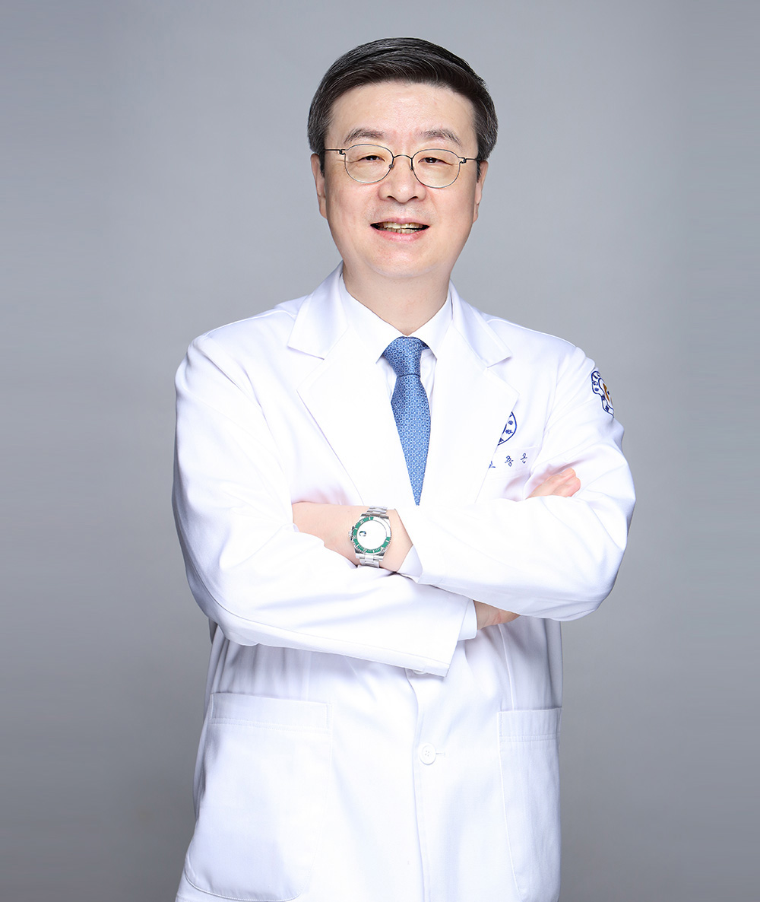

안녕하십니까?
정성을 다하는 연세사랑병원입니다.
본원 홈페이지를 방문해주신 여러분께,
깊은 감사의 말씀을 전합니다.
연세사랑병원은 2003년 부천시 역곡동에서 개원, 2008년 서초구 방배동으로 병원을 이전하였고, 2023년 8월 글로벌 관절, 척추 병원으로 거듭나기 위해 확장이전 하였습니다. 20여 년 가까이 국민의 관절·척추건강을 지키는 대한민국 대표 전문병원으로 자리매김하고 있습니다. 지난 2003년 연세대학교 세브란스 출신의 관절·척추 전문의들이 ‘쾌유와 제2의 즐거운 인생’을 찾아 드리고자 뜻을 모았습니다. 낮에는 정성을 다하는 진료와 밤에는 열성을 다하는 연구에 매진하며 어느덧 20년이라는 시간이 흘렀습니다. 본원이 지금까지 성장하게 된 원동력은 바로 여러분들의 끊임없는 관심과 사랑 덕분입니다. 이러한 여러분의 사랑에 보답하고자 연세사랑병원은 전국 곳곳을 다니며 의료봉사를 진행하였으며, 국내거주 외국인 주민 대상 의료봉사, 콘서트 개최, 서초구 선별 진료소 의료 인력 파견 및 물자 전달(코로나-19) 등 사회적 활동을 통해 지역사회에 대한 사랑을 몸소 실천하고 있습니다.